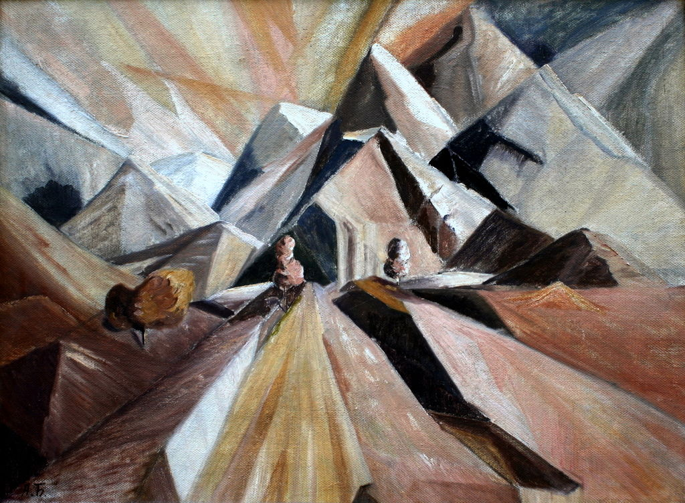

Taras Shevchenko
Welcome to this gallery which celebrates Ukrainian art throughout the ages.
The first artist in this gallery lived during a time that Ukraine was still a part of the Russian Empire.
However, since Shevchenko was born in Moryntsi (Ukraine), Ukrainians regard him as a native part of their art tradition.
Besides painting works like the ones you see depicted above, Shevchenko liked to write poetry.
That's why he is also known as 'Kobzar Taras', or 'the bard Taras'.
Kateryna Primachenko
Kateryna Primachenko made the world news this year: as part of the 2022 invasion of Ukraine a museum full of her artpieces was destroyed.
In the image above, you see a postal stamp from 2020 hosting her artwork.
The names of Primachenko's pieces suggest freedom and, to me, form a stark symbolic contrast to the ongoing, nasty warfare.
Kateryna Bilokur
The artist Kateryna Bilokur can be seen as a 'people's artist': her life was rather conventional.
Among other things, she cared for her sick mother, lived in an overcrowded house and had some other tribulations in her lifetime.
It seems that Kateryna Bilokur has been named the People's Artist of Ukraine for this commonality with the people.
Mykhailo Boychuk
In his art career, Mykhailo Boychuck studied Ukraine's traditions closely.
Among these traditions is the Orthodox church, which is rather different from 'Western-European' churches, such as Protestantism and Catholicism.
In this artpiece, Boychuck portrays the figure of Jesus in quite an excentric style.

By Frank Lloyd Wright (1867-1959)
The last artist - somewhat haphazardly - selected for this gallery is Alexander Bogomazov.
He has been called the 'Picasso of Ukraine'.
Some of Bogomazov's paintings are quite dark, while other ones have more industrial elements.
These reflections of real contemporary life illustrate that art can function as a critique on society; to interact, comment or reflect on it.
(End of Gallery)